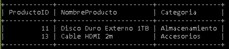

Código SQL
SELECT
pr.ProductoID,
pr.NombreProducto,
pr.Categoria,
pr.Stock
FROM Productos pr
LEFT JOIN DetallesPedido dp
ON pr.ProductoID = dp.ProductoID
WHERE dp.ProductoID IS NULL;
Resultado de la Consulta
En este apartado se muestra la captura del resultado obtenido al ejecutar la consulta en MySQL, donde se identifican los productos que no han tenido ninguna venta.
